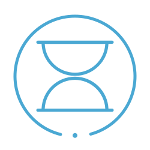
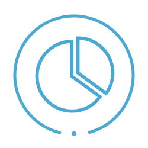

¿Por qué elegir el Colegio Técnico Nacional?

Estrategia
Los docentes llevan a cabo técnicas de enseñanza que se demuestra, dan resultados positivos.
Competencia
No sólo se realizan competencias internas, los alumnos también compiten ante otras instituciones.

Exigencia
Formar parte del CTN conlleva muchas responsabilidades y la predisposición del joven exige mucho para mantener su estadía.

Infraestructura
Contamos con todos los materiales que están a nuestro alcance para el desarrollo integral de los alumnos.

Nivel Académico
Los alumnos egresados del CTN son siempre muy bien reconocidos y recomendados por otros por el nivel de manejo que tienen de a cuerdo a su especialización.

Pasantías
Las pasantías son realizadas en el tercer año, puesto que en el último año es cuando se adquieren todos los conocimientos necesarios para que el joven comience a desenvolverse en el campo laboral.